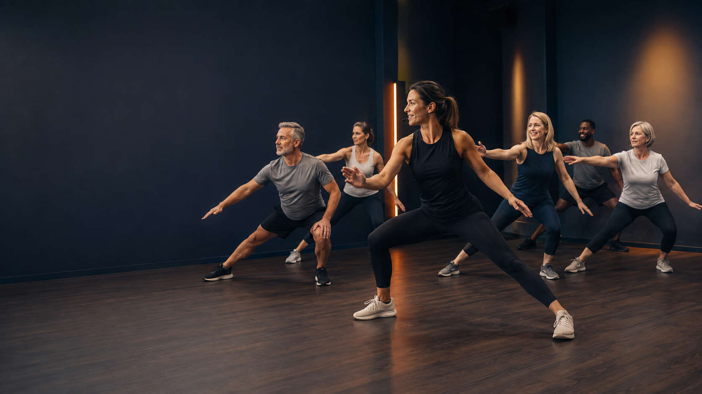

Forklar
Nævn øvelsen, formålet og de vigtigste tekniske fokuspunkter.

Sammensæt et fagligt begrundet træningspas, der tager højde for alder, niveau, intensitet og musiksmag.
Se udførelsen: Åbn en øvelse for at se start- og bevægelsesposition samt de aktive muskelgrupper med latinske navne.
Spotify-forslagene tilpasses musiksmag, aldersprofil og intensitet. En stabil 4/4-takt gør musikken nem at følge, mens BPM-zonerne skaber en naturlig energikurve gennem timen.
Find på SpotifyNævn øvelsen, formålet og de vigtigste tekniske fokuspunkter.
Demonstrér 3–5 rolige gentagelser fra en synlig position.
Se deltagerne fra flere vinkler og hold overblik over hele holdet.
Giv én regression og én progression, så alle kan deltage meningsfuldt.